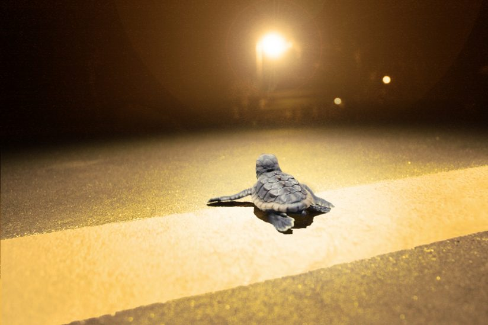
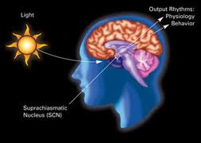
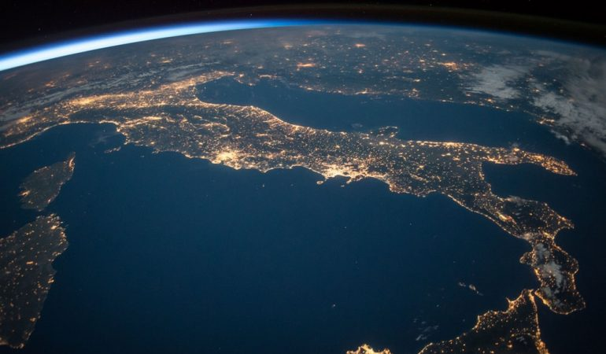

 Artificial lights can affect nocturnal animals because they can trick them into thinking it is daytime. It also affects baby sea turtles because when they hatch they follow the bright horizon, but instead of doing that they end up following city lights due to light pollution which kills millions of sea turtles a year. And this also affects birds that migrate and hunt at night because they rely on moonlight and starlight, but instead of following the stars and moon they end up colliding into a building or tower due to light pollution. Light pollution can also cause birds to migrate too early or too late which makes them miss nesting season. Artificial light can also draw out insects which increases their likelihood of exposure to predators, declining the insects' population.
 Light pollution also affects amphibians because most frogs are nocturnal, so it is expected that lights affect breeding, feeding, and predator avoidance. It doesn’t just affect animals and insects, but it also affects humans in several ways. Light pollution can cause us to have serious interruptions in the day/night cycle, which has been demonstrated to interfere with melatonin production, resulting in higher incidences of many illnesses including some cancers, such as breast cancer.
 Light pollution alters our view of the sky and stars, but no group of people is more affected by this phenomenon than astronomers. Light spill and sky glow interferes with astronomical equipment and makes viewing faint celestial bodies difficult even with the aid of a telescope. Astronomy is one of the oldest sciences in human history and has made countless contributions to technology, economy, and society with applications like personal computers, communication satellites, mobile phones, Global Positioning Systems (GPS), solar panels, and Magnetic Resonance (MRI) scanners. Today, astronomy also helps us determine the Sun's effect on Earth's climate, and identify any potential threats to Earth from space. In order to conduct observation and research, astronomers require dark skies.